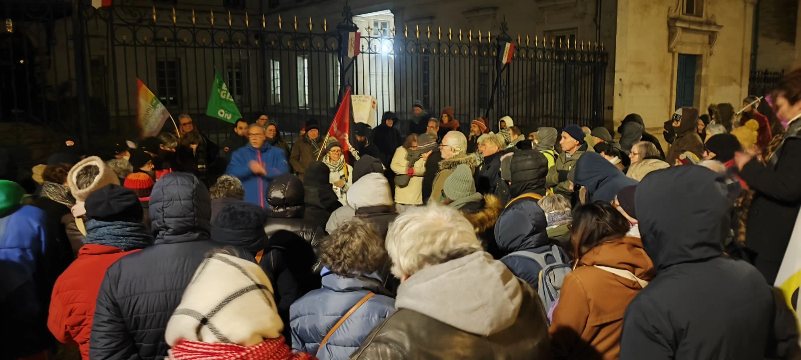

Compte rendu fédéral
À Niort, nous nous sommes rassemblés le 5 janvier en solidarité avec le Venezuela
Date indiquée par Facebook · 5 janvier 2026
Repères éditoriaux
Le lundi 5 janvier 2026, nous nous sommes rassemblés devant la préfecture à Niort pour dénoncer l’intervention militaire des États-Unis au Venezuela. Nous avons défendu le respect du droit international et le droit du peuple vénézuélien à disposer de lui-même. Dans le compte rendu d’origine reproduit ci-dessous, « décembre » est une coquille.
Texte conservé avec la publication
Rassemblement à Niort en soutien au peuple Vénézuélien et contre le terrorisme d’Etat.
Plus d’une centaine de personnes s'est rassemblée ce lundi 5 décembre devant la préfecture pour dénoncer l’agression impérialiste des États-Unis de Trump contre le Vénézuela, et l’enlèvement du président Maduro et de son épouse, et la mort d’environ 80 personnes lors de ce raid militaire.
Trump s’assoit sur le droit international. Le terrorisme d’État est assumé, les objectifs de prédation revendiqués. Depuis sa résidence, Trump a annoncé sans détour la curée pétrolière, en s’adjugeant la propriété des réserves d’hydrocarbures du Venezuela.
Et il annonce clairement que d’autres suivront s’ils ne se plient pas aux intérêts de l’impérialisme états-uniens : Cuba, la Colombie, le Mexique, le Brésil, le Groenland. Et demain, d’autres encore, car le monde de Trump, celui de l’internationale néofasciste qu’il parraine, est un monde sans règles, où règnent seules la loi du plus fort et celle des pétrodollars.
Cette opération criminelle, illégale, arbitraire, ravive la doctrine Monroe (du président Monroe en date de 1823) qui prêche une tutelle stricte sur tout le continent américain, de l’Alaska à la Terre de Feu.
Et Macron approuve cette action. C’est irresponsable. C’est l’enterrement pur et simple du droit des peuples à disposer d’eux-mêmes si nous laissons faire.
#venezuela

Sources
Archive rouge · export Facebook · AR-0002-FB-00913
À lire aussi · Venezuela. Notre appel à se rassembler le 5 janvier à Niort